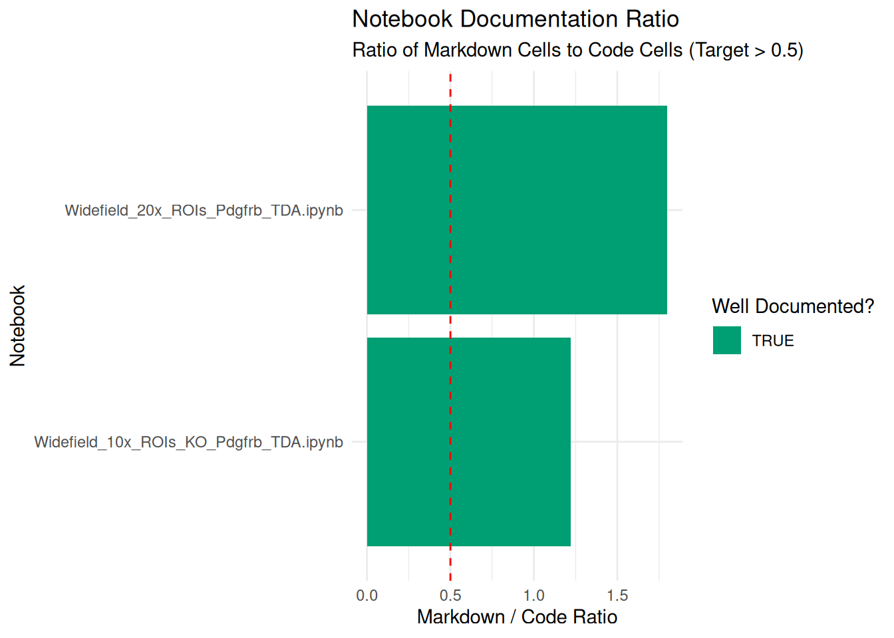

Code
# install.packages(c("tidyverse", "jsonlite", "rstudioapi", "stringr"))Jupyter Notebooks are Literate Programming, a paradigm introduced by Donald Knuth (1984), where code and natural language documentation are interwoven to create a “computational narrative.” In data curation, preserving this narrative is as important as preserving the raw data.
Assess the structural integrity and documentation quality of notebooks to ensure they remain understandable and potentially reproducible for future researchers.
Notebooks are notoriously difficult to re-execute. Studies show that as few as 4% of notebooks produce identical results over time due to non-linear execution, hidden states, and undocumented software environments (Pimentel et al. 2019).
Key Curation Objectives:
nbformat versions to ensure compatibility.We use jsonlite to parse the notebook structure and tidyverse for data manipulation.
If you do not have the required packages, run this command once in your R console:
# install.packages(c("tidyverse", "jsonlite", "rstudioapi", "stringr"))library(tidyverse)
library(jsonlite) # To parse .ipynb files
library(rstudioapi) # For directory selection
library(stringr) # For dependency regexWe select the folder containing the .ipynb files.
Note: If running interactively, a dialog box will appear. Otherwise, it defaults to the target_dir parameter.
# 1. Try to select interactively if in RStudio
if (interactive() && .Platform$OS.type == "windows") {
selected_dir <- rstudioapi::selectDirectory(caption = "Select Notebook Directory")
} else {
selected_dir <- NULL
}
# 2. Logic to determine final directory
if (!is.null(selected_dir)) {
target_dir <- selected_dir
} else {
target_dir <- params$target_dir
}
print(paste("Analyzing directory:", target_dir))[1] "Analyzing directory: data/Inspect_ipynb/"We scan the directory for files ending in .ipynb.
ipynb_files <- list.files(
path = target_dir,
pattern = "\\.ipynb$",
recursive = TRUE,
full.names = TRUE,
ignore.case = TRUE
)
print(paste("Found", length(ipynb_files), "Jupyter Notebook files."))[1] "Found 2 Jupyter Notebook files."head(ipynb_files)[1] "data/Inspect_ipynb//Widefield_10x_ROIs_KO_Pdgfrb_TDA.ipynb"
[2] "data/Inspect_ipynb//Widefield_20x_ROIs_Pdgfrb_TDA.ipynb" We perform a “Fail-Safe” extraction. If a notebook is corrupted (invalid JSON), the script flags it as INVALID_JSON instead of crashing.
message("Generating Notebook Report...")
# Regex for imports (Basic Python/R)
# Python: import numpy, from sklearn import ...
# R: library(tidyverse), require(data.table)
import_pattern_py <- "^\\s*(?:import|from)\\s+([a-zA-Z0-9_\\.]+)"
import_pattern_r <- "(?:library|require|p_load)\\s*\\(\\s*[\"']?([a-zA-Z0-9\\.]+)[\"']?\\s*\\)"
report <- purrr::map_dfr(ipynb_files, function(file_path) {
fname <- basename(file_path)
tryCatch({
# Read the JSON structure
nb_json <- jsonlite::fromJSON(file_path, flatten = FALSE)
# SAFETY CHECK: Ensure it's a list (JSON object)
if (!is.list(nb_json)) {
stop("Parsed content is not a JSON object (is it a list?)")
}
# --- Metadata Extraction ---
# Handle metadata being NULL or not a list
metadata <- nb_json$metadata
if (is.null(metadata)) {
display_name <- "Unknown"
language <- "Unknown"
} else if (!is.list(metadata)) {
display_name <- "Error: Metadata not a list"
language <- "Unknown"
} else {
kernelspec <- metadata$kernelspec
# Kernelspec check
if (!is.null(kernelspec) && is.list(kernelspec)) {
display_name <- if(!is.null(kernelspec$display_name)) kernelspec$display_name else "Unknown"
language <- if(!is.null(kernelspec$language)) kernelspec$language else "Unknown"
} else {
display_name <- "Unknown"
language <- "Unknown"
}
}
format_version <- paste(nb_json$nbformat, nb_json$nbformat_minor, sep=".")
# --- Cell Analysis ---
cells <- nb_json$cells
if (is.null(cells) || length(cells) == 0) {
return(tibble(
FileName = fname, Language = language, Kernel = display_name, NbFormat = format_version,
TotalCells = 0, MarkdownCells = 0, CodeCells = 0,
HasOutputs = FALSE, ErrorOutputs = 0, ExecOrderLinear = TRUE,
Libraries = "", Status = "Empty"
))
}
# Counts
num_cells <- nrow(cells)
markdown_cells <- sum(cells$cell_type == "markdown")
code_cells_df <- cells[cells$cell_type == "code", ]
num_code_cells <- nrow(code_cells_df)
# --- Code Cell Deep Dive ---
has_output <- FALSE
error_count <- 0
exec_order_linear <- TRUE
detected_libs <- character(0)
if (num_code_cells > 0) {
# 1. Check Outputs
if (!is.null(code_cells_df$outputs)) {
has_output <- sum(sapply(code_cells_df$outputs, length) > 0) > 0
# Check for Errors
all_outputs <- unlist(code_cells_df$outputs, recursive = FALSE)
if (length(all_outputs) > 0) {
# Safely extract output_type
# Ensure x is a list/env before $ access
output_types <- unlist(lapply(all_outputs, function(x) {
if (is.list(x)) return(x$output_type) else return(NA)
}))
error_count <- sum(output_types == "error", na.rm = TRUE)
}
}
# 2. Check Execution Order
exec_counts <- unlist(code_cells_df$execution_count)
if (!is.null(exec_counts) && length(exec_counts) > 1) {
valid_counts <- exec_counts[!is.na(exec_counts)]
if (length(valid_counts) > 1) {
exec_order_linear <- !is.unsorted(valid_counts)
}
}
# 3. Detect Libraries
# Unlist all source lines directly to handle line-by-line regex anchors correctly
# (code_cells_df$source is a list of character vectors)
all_lines <- unlist(code_cells_df$source)
if (length(all_lines) > 0) {
if (tolower(language) == "python") {
matches <- str_match(all_lines, import_pattern_py)
# str_match returns matrix [full_match, group1]
detected_libs <- unique(matches[,2])
detected_libs <- detected_libs[!is.na(detected_libs)]
} else if (tolower(language) == "r") {
matches <- str_match(all_lines, import_pattern_r)
detected_libs <- unique(matches[,2])
detected_libs <- detected_libs[!is.na(detected_libs)]
}
}
}
tibble(
FileName = fname,
Language = language,
Kernel = display_name,
NbFormat = format_version,
TotalCells = num_cells,
MarkdownCells = markdown_cells,
CodeCells = num_code_cells,
doc_ratio = round(MarkdownCells / (CodeCells + 0.001), 2),
HasOutputs = has_output,
ErrorOutputs = error_count,
ExecOrderLinear = exec_order_linear,
Libraries = paste(detected_libs, collapse = ", "),
Status = "Success"
)
}, error = function(e) {
tibble(
FileName = fname, Language = "ERROR", Kernel = "", NbFormat = "",
TotalCells = NA, MarkdownCells = NA, CodeCells = NA,
HasOutputs = NA, ErrorOutputs = NA, ExecOrderLinear = NA,
Libraries = "", Status = paste("Failed:", e$message)
)
})
})
# Display preview
print("--- Jupyter Notebook Report Preview ---")[1] "--- Jupyter Notebook Report Preview ---"print(head(report))# A tibble: 2 × 13
FileName Language Kernel NbFormat TotalCells MarkdownCells CodeCells doc_ratio
<chr> <chr> <chr> <chr> <int> <int> <int> <dbl>
1 Widefie… python Pytho… 4.5 51 28 23 1.22
2 Widefie… python Pytho… 4.5 56 36 20 1.8
# ℹ 5 more variables: HasOutputs <lgl>, ErrorOutputs <int>,
# ExecOrderLinear <lgl>, Libraries <chr>, Status <chr>We visualize the ratio of Markdown (Text) to Code. A ratio near 0 implies a script with no explanation. A ratio > 1 implies a well-documented narrative.
ggplot(report, aes(x = reorder(FileName, doc_ratio), y = doc_ratio)) +
geom_col(aes(fill = doc_ratio > 0.5)) +
coord_flip() +
geom_hline(yintercept = 0.5, linetype = "dashed", color = "red") +
scale_fill_manual(values = c("FALSE" = "#D55E00", "TRUE" = "#009E73"), name = "Well Documented?") +
labs(
title = "Notebook Documentation Ratio",
subtitle = "Ratio of Markdown Cells to Code Cells (Target > 0.5)",
x = "Notebook",
y = "Markdown / Code Ratio"
) +
theme_minimal()
Save the report to a CSV file for review.
output_dir <- "Results/Inspect_ipynb"
dir.create(output_dir, recursive = TRUE, showWarnings = FALSE)
output_file <- file.path(output_dir, paste0("Jupyter_Report_", format(Sys.Date(), "%Y%m%d"), ".csv"))
write.csv(report, output_file, row.names = FALSE)
print(paste("Report saved to:", output_file))[1] "Report saved to: Results/Inspect_ipynb/Jupyter_Report_20260703.csv"Use the generated CSV to perform these checks:
Residual Outputs (has_outputs): If TRUE, the notebook was saved with graphs, tables, or text logs visible. Tho reduce file size and prevent accidentally leaking sensitive data (PII) that might be displayed in a table output, it is generally recommended to clear all outputs. To do this, you can use nbstripout or the Jupyter interface.
Kernel Consistency: Check for mismatches, such as a notebook using a python2 kernel when the project standard is python3, or a file named Analysis_R.ipynb that actually runs on a python kernel. These inconsistencies often break reproducibility. Ensure the kernel metadata matches the environment provided in requirements.txt or environment.yml.
Format Obsolescence (nbformat): The standard format version is currently 4.x. If you find notebooks with nbformat < 4 (created before ~2015), they may not render correctly in modern JupyterLab. Convert them using nbconvert or open and re-save them in a modern interface.
JSON Validity: Jupyter notebooks are just JSON text files. If the script fails to parse a file, it is likely a “Corrupt Notebook” (invalid JSON structure). You can attempt to fix the JSON syntax manually in a text editor, or check if the file was truncated during a previous transfer.
While R parses the metadata efficiently, these specialized tools are essential for managing the notebook lifecycle and reproducibility.
nbstripout: Is a command-line tool that automatically strips output cells from notebooks. It is essential for version control (Git) and preparing “clean” copies for the archive.
Jupytext: This utility converts .ipynb files into paired plain-text scripts (Markdown or Python/R scripts). This allows you to diff changes easily and preserves the code even if the notebook JSON corrupts.
nbconvert: The official tool to convert notebooks into static formats like HTML, PDF, or LaTeX. It is recommended to generate a static HTML or PDF copy of the notebook with outputs executed to ensure the visual results are retained even if the code stops working in the future.
Binder / Repo2Docker: This utility allows you to build the exact software environment required to run the notebook.
For users who want to run this analysis on a server (HPC), in a batch job, or from the command line, here is the pure R script version.
Inspect_ipynb_Script.R ScriptDownload the R Script: Inspect_ipynb_Script.R
Inspect_ipynb_submit.sh)#!/bin/bash
#SBATCH --job-name=ipynb_inspect
#SBATCH --nodes=1
#SBATCH --ntasks=1
#SBATCH --time=00:15:00
#SBATCH --mem=4G
#SBATCH --output=logs/inspect_ipynb_%j.log
# Load R module (Adjust based on your cluster's module name)
module load R
# Define target directory containing notebooks
TARGET_DIR="/scratch/user/project_data/notebooks"
# Ensure the Results directory exists (optional, script handles it too)
mkdir -p Results/Inspect_ipynb
# Run the R script
echo "Starting Notebook Inspection on $TARGET_DIR"
Rscript Scripts/Inspect_ipynb_Script.R "$TARGET_DIR"